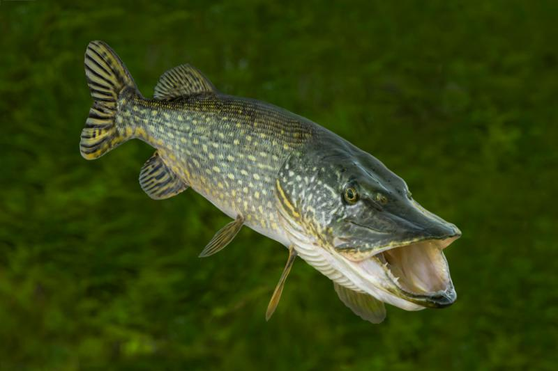

GATUNEK RYBY
Szczupak 🐊
Szczupak to jeden z najbardziej znanych drapieżników występujących w polskich wodach. Jest silną i bardzo charakterystyczną rybą.
📋 Podstawowe informacje
Rozmiar
Zwykle 40–80 cm
Waga
Najczęściej kilka kilogramów
Występowanie
Jeziora, rzeki i zbiorniki
Trudność
Średnia
🎣 WĘDKOWANIE
Jak złowić szczupaka?
Szczupak jest popularnym celem wędkarzy spinningowych. Można próbować łowić go na większe przynęty sztuczne.
🎣 Na co łowić?
Gumy, woblery, blachy i inne przynęty przeznaczone na drapieżniki.
📍 Gdzie szukać?
Przy roślinności, trzcinach, zatokach i innych miejscach, w których może polować.
🕐 Kiedy?
Szczupak może być aktywny przez różne pory dnia, zależnie od warunków.